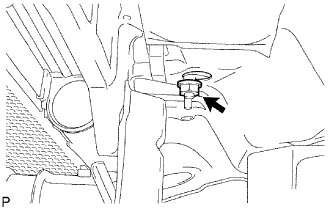

CẢM BIẾN TÚI KHÍ TRƯỚC > LẮP |
| 1. LẮP CẢM BIẾN TÚI KHÍ TRƯỚC TRÁI |
|  |
Lắp cảm biến bằng đai ốc.
Kiểm tra rằng không có độ rơ trong các chi tiết lắp ráp của cảm biến.
Nối giắc cảm biến.
| 2. LẮP CẢM BIẾN TÚI KHÍ TRƯỚC PHẢI |
 |
Lắp cảm biến bằng đai ốc.
Kiểm tra rằng không có độ rơ trong các chi tiết lắp ráp của cảm biến.
Nối giắc cảm biến.
| 3. LẮP ẮC QUY |
Lắp ắc quy.
Lắp thanh giữ ắc quy bằng 2 bulông.
Nối cáp vào cực dương (+) ắc quy.
| 4. LẮP BỘ LỌC GIÓ |
| 5. NỐI CÁP ÂM ẮC QUY |
| 6. LẮP LƯỚI CHE KÉT NƯỚC |
 |
Cài khớp 3 vấu để lắp lưới che két nước.
Lắp kẹp và 2 vít.
| 7. TIẾN HÀNH THIẾT LẬP BAN ĐẦU |
TIẾN HÀNH THIẾT LẬP BAN ĐẦU (Xem trang Kích chuột vào đây).
| 8. KIỂM TRA ĐÈN CẢNH BÁO SRS |
Kiểm tra đèn báo SRS (Xem trang Kích chuột vào đây).